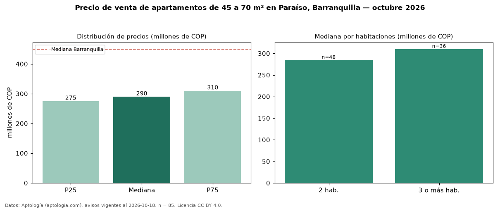

Precio de venta de apartamentos de 45 a 70 m² en Paraíso, Barranquilla — octubre 2026
En Paraíso, Barranquilla, la mediana de precio de venta de apartamentos de 45 a 70 m² es COP 290 millones, según 85 avisos vigentes. Eso es 9 % menos que la mediana de todos los apartamentos en venta de Paraíso (COP 320 millones, n = 183); este segmento reúne el 46 % de esos avisos. Por metro cuadrado, la mediana es COP 5,19 millones/m² (n = 85), 7 % por encima del conjunto de referencia (COP 4,82 millones/m²). El área mediana anunciada es 56 m². El segmento con más oferta es el de 2 habitaciones (48 avisos, mediana COP 284 millones); pasar de 2 habitaciones a 3 o más habitaciones cambia la mediana +9 %. La administración mediana declarada es COP 281.000 al mes (n = 66). El estrato más frecuente es 4 (94 % de los avisos con estrato). La mediana de todos los apartamentos en venta de Barranquilla es COP 450 millones (−36 % de diferencia). Datos: Aptología (aptologia.com), CC BY 4.0 — https://www.aptologia.com/venta/barranquilla/paraiso. Archivos: PDF, CSV con las cifras y gráfica PNG.

| Avisos únicos | 85 |
|---|---|
| Percentil 25 | COP 275.000.000 |
| Mediana | COP 290.000.000 |
| Percentil 75 | COP 310.000.000 |
| Mediana por m² | COP 5.185.185 |
Fuente: avisos vigentes de portales inmobiliarios recopilados por Aptología, deduplicados (mínimo 30 avisos únicos por celda). Precios pedidos, no cerrados. Fecha: 2026-10-18.